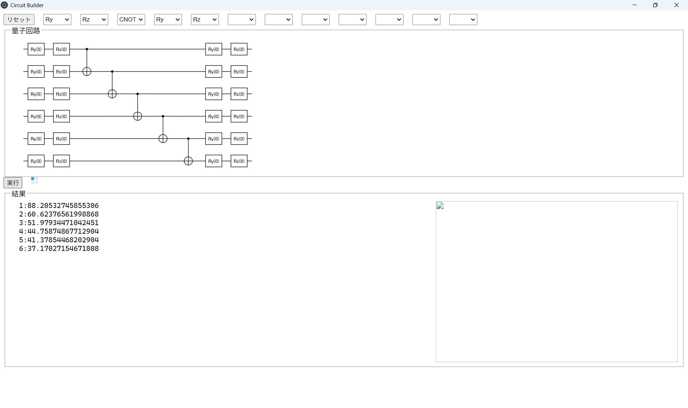
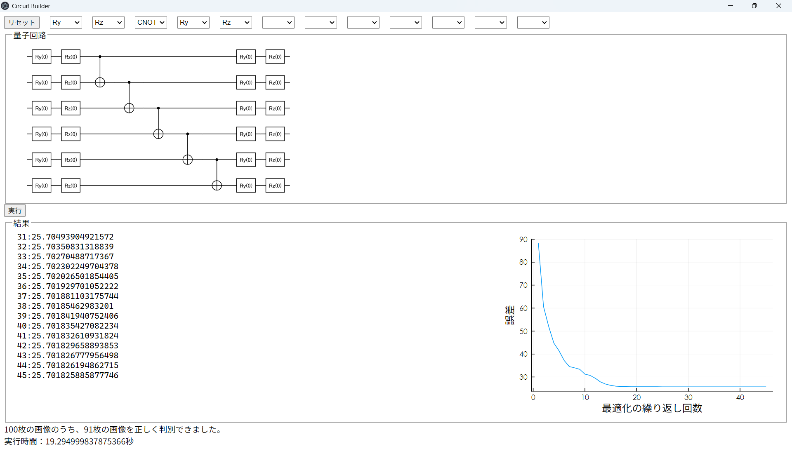
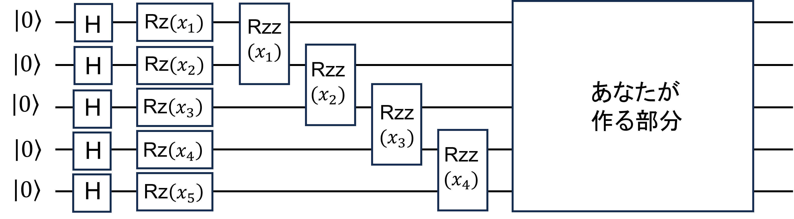

目次
まだインストールしていない場合は、Juliaをインストールする。（参考） 手動でインストールする方法もあるが、こだわりがないなら公式のツールjuliaupを使う。 （juliaupが無かった時の古い情報は、手動インストールを紹介していることがある。）
WindowsならコマンドプロンプトまたはPowerShellで
インストールが終わったら、コマンドプロンプト/PowerShell/ターミナル（以下、まとめてターミナルと呼ぶ） でJuliaを実行する。
> julia
_
_ _ _(_)_ | Documentation: https://docs.julialang.org
(_) | (_) (_) |
_ _ _| |_ __ _ | Type "?" for help, "]?" for Pkg help.
| | | | | | |/ _` | |
| | |_| | | | (_| | | Version 1.10.10 (2025-06-27)
_/ |\__'_|_|_|\__'_| | Official https://julialang.org/ release
|__/ |
julia>画面上部、「リセット」ボタンの横に並んでいるプルダウンメニューから量子ゲートを選び、 変分量子回路を作る。「実行」ボタンを押して、学習を開始する。
学習が終わると、コスト関数の履歴のグラフと、テストデータに対しての成績、実行時間が表示される。
成績が良く、かつ実行時間が短い回路を作ろう！
機械学習の素人による解説なので、鵜呑みにしないこと！
ニューラルネットワークに代表される、教師あり機械学習を一言で言うと、教師データである 特徴量\(X_i\)と正解ラベル\(y_i\)の組\[ \{(x_i, y_i)\}_i \]が大量に与えられて、そこからそれらの対応関係\(f\)\[ f(x_i) = y_i \]を見つけることである。特徴量とは例えば手書き文字の画像で、正解ラベルはその画像に何と書いてあるかである。 対応関係を見つけるとは、文字の画像を入力すると書いてある文字を判定してくれる関数\(f\)を見つけることである。
その方法であるが、一番安直なものは適当な関数をたくさん試してみることである。でもこの方法はあまり賢くない。 なぜなら試すべき関数は無限にあり、どのような関数が良いのかの指針を得るのが困難だからだ。 しかも、特徴量\(X_i\)は非常に高次元のベクトルであり、このようなときに良い関数\(f\)を見つけるのはもはや 人間業ではない。
そこで、特徴量だけでなく、別のパラメータ\(\theta\)にも依存する関数\(f(\theta,\ x)\)を考える。安直な方法ではいろいろな
関数を試したが、その代わりにいろいろな\(\theta\)を試すことにする。\(f(\theta,\ x)\)の構成法はさまざまであり、
一番有名なのがニューラルネットワーク、今回やろうとしているのが量子回路である。
そして試す\(\theta\)の選び方の指針だが、現在の標準的な手法では微分を用いる。何を微分するかというと、コスト関数\[
C(\theta) = \sum_i (f(\theta,\ x_i) - y_i)^2
\]である。この関数は\(f(\theta,\ x_i)\)がすべての\(x_i\)に対して正しく正解を予測できている時、
（つまり\(f(\theta, x_i) = y_i\)）ゼロになる。なので学習の目標としてはコスト関数をなるべく小さくするような
\(\theta\)を見つけることになる。もしコスト関数の微分が正ならば\(\theta\)を小さくする、負ならば大きくすれば
コスト関数は小さくなる。微分してどちらかの方向に\(\theta\)を動かす、というのを繰り返せばいつかは\(\theta\)
は極小点に到達し、\(f(\theta,\ x_i)\)は良い予測ができていることが期待できる。
というわけで大枠はこれなのだが、実用的には関数\(f\)の構造としてどのようなものを採用するのかが大切になる。 量子回路学習で言えば量子回路の設計である。複雑な量子回路であれば複雑なデータも学習できることが期待されるが そのような回路は現実的に実行が難しかったり、量子回路のノイズのせいで期待通り働かなかったり、 コスト関数を小さくする（これを最適化と呼ぶ）のが大変になったりする。つまり、回路のシンプルさと予測の正確さの バランスが大切ということになる。
今回のデモではMNISTというものを使う。これは手書きの数字0～9画像をたくさん集めたもので、機械学習の練習としては 定番の題材である。今回は簡略化のためにこのデータセットの中から0と1のもののみを使うことにする。 つまり目標は0と1の画像が与えられて、それがどちらなのかを量子回路を用いて判定することである。MNISTの画像は \(28 \times 28\)であり784ピクセルである。理想的にはこれをすべて量子回路に与えたいのだが、現在の量子コンピュータの 性能的に厳しい。そこで、主成分分析（PCA）と呼ばれる手法を使って画像を圧縮する（ここではPCAについては深く触れない）。 今回の設定では784を5にまで減らしている。そんなに減らして大丈夫かと思うかもしれないが、まぁ案外大丈夫である。
ここで今回のデモでの量子回路の全体を示す。

この記事が詳細になりすぎるのは避けたいので、量子回路中のH、Rz、Rzzなどについては詳しく触れない。ただ、\((x_1)\)
などとついている量子ゲートは、それが特徴量（をPCAで圧縮したもの）に依存しているということは理解しておいてほしい。
つまり、Rzz\((x_4)\)が終わった時点での量子状態は\(x_1\)～\(x_5\)の情報を含んだものになっている。
そのあとに、あなたがウィンドウ上で作る部分がある。これが\(\theta\)の関数になっていて、最適化による調整を
受ける部分である。さいごに、（図には書かれていないが）量子状態は測定され、0～1の結果を返す。0～0.5であれば
入力された文字は0であると推定し、0.5～1であれば1と推定する。